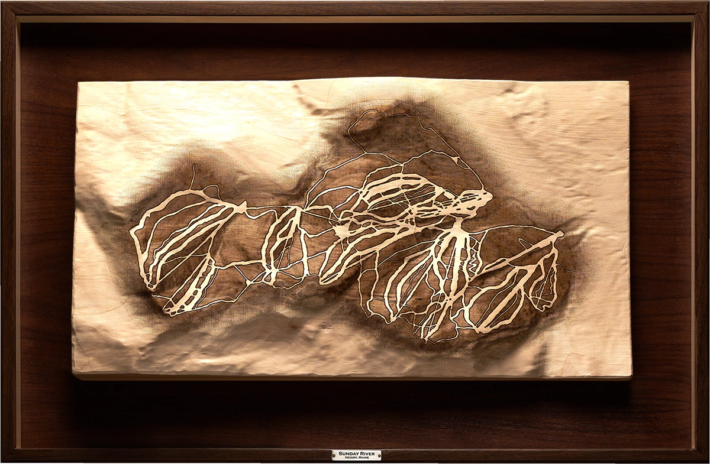
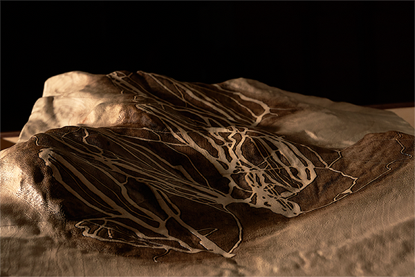

Mahoosuc Range
Newry, Maine
Relief of the Southern Mahoosuc Range and Sunday River's eight interconnected peaks in western Maine. Hardwood captures the multi-peak structure, ridges, and valleys that give the range its sense of movement. Laser-etched trails link terrain across summits while keeping the ridge system primary.

Complete topographic composition

Dimensional perspective showing elevation

Terrain transition from base to summits
Mahoosuc Range was approached as connected terrain rather than a single destination. Ridges link, valleys interrupt, and trails braid across exposures.
The composition was arranged to emphasize lateral movement: how the terrain connects across summits, how valleys separate zones, and how the range is experienced through passage rather than arrival.
Trail etching was designed for clarity at distance, with the carved terrain carrying the larger structure. The relief floats within the frame, allowing the range to read as continuous terrain rather than bounded geography.
— Artist's Note